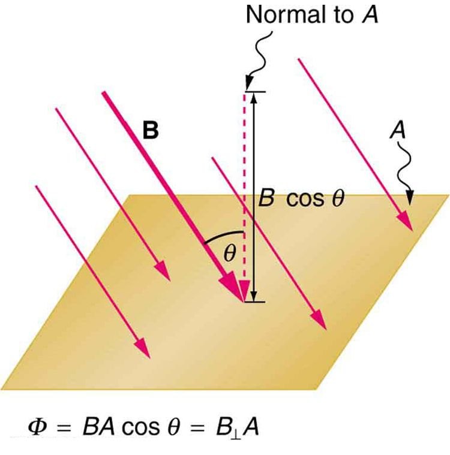

![The picture shows Faraday’s apparatus for demonstrating that a magnetic field can produce a current. It consists of a cylinder shaped battery. The positive end of the battery is connected to an open switch. There is a ring shaped iron core consisting of a set of coils one on the top and another at the bottom. The other end of the switch is connected to one end of the top coil. The other end of the top coil is connected back to the battery. Both the ends of the bottom coil are shown connected across a galvanometer box which shows a null deflection.](Figure_24_01_01.jpg)
The original, as published: OpenStax, College Physics 2e, Urone, Hinrichs, section 23.1 Induced Emf and Magnetic Flux. © Rice University. CC BY-NC-SA 4.0, https://creativecommons.org/licenses/by-nc-sa/4.0/. Imported as published, from https://openstax.org/books/college-physics-2e/pages/23-1-induced-emf-and-magnetic-flux
By the end of this section, you will be able to:
The apparatus used by Faraday to demonstrate that magnetic fields can create currents is illustrated in the figure. When the switch is closed, a magnetic field is produced in the coil on the top part of the iron ring and transmitted to the coil on the bottom part of the ring. The galvanometer is used to detect any current induced in the coil on the bottom. It was found that each time the switch is closed, the galvanometer detects a current in one direction in the coil on the bottom. (You can also observe this in a physics lab.) Each time the switch is opened, the galvanometer detects a current in the opposite direction. Interestingly, if the switch remains closed or open for any length of time, there is no current through the galvanometer. Closing and opening the switch induces the current. It is the change in magnetic field that creates the current. More basic than the current that flows is the emf that causes it. The current is a result of an emf induced by a changing magnetic field, whether or not there is a path for current to flow.
An experiment easily performed and often done in physics labs is illustrated in the figure. An emf is induced in the coil when a bar magnet is pushed in and out of it. Emfs of opposite signs are produced by motion in opposite directions, and the emfs are also reversed by reversing poles. The same results are produced if the coil is moved rather than the magnet—it is the relative motion that is important. The faster the motion, the greater the emf, and there is no emf when the magnet is stationary relative to the coil.
![The diagram shows five stages of an experiment done by moving a magnet relative to a coil and measuring the e m f produced. The first stage of the experiment shows a wire coil with two loops connected across a galvanometer. The loop is in horizontal plane. A cylindrical rod shaped magnet is moved upward through the loop with the north pole of the magnet facing the loop and the South Pole away from the loop. The magnetic lines of force of the magnet are shown to emerge out from the North Pole and intersect the coil. A current is shown to be induced in the coil in clockwise direction. The galvanometer needle is shown to deflect toward right. The second stage of the experiment shows the next state of the first stage of the experiment. The cylindrical rod shaped magnet is now moved downward away from the loop with the north pole of the magnet facing the loop and South Pole away from the loop. The magnetic lines of force of the magnet are shown to emerge out from the North Pole and intersect the coil. A current is shown to be induced in the coil in anti clockwise direction. The galvanometer needle is shown to deflect toward left. The third stage of the experiment shows a wire coil with two loops connected across a galvanometer. The loop is in horizontal plane. A cylindrical rod shaped magnet is moved upward through the loop with the south pole of the magnet facing the loop and the North Pole away from the loop. The magnetic lines of force of the magnet are shown to merge into the South Pole and intersect the coil. A current is shown to be induced in the coil in anti clockwise direction. The galvanometer needle is shown to deflect toward left. The fourth stage of the experiment shows the next state of the third stage of the experiment. The cylindrical rod shaped magnet is now moved downward away from the loop with the south pole of the magnet facing the loop and the North Pole away from the loop. The magnetic lines of force of the magnet are shown to merge into the South Pole and intersect the coil. A current is shown to be induced in the coil in clockwise direction. The galvanometer needle is shown to deflect toward right. The fifth stage of the experiment shows a wire coil with two loops connected across a galvanometer. The loop is in horizontal plane. A cylindrical rod shaped magnet is held stationary near the loop with the north pole of the magnet facing the loop and south away from the loop. The magnetic lines of force of the magnet are shown to emerge out from the North Pole and intersect the coil. No current is induced in the coil. The galvanometer needle does not deflect.](Figure_24_01_02.jpg)
The method of inducing an emf used in most electric generators is shown in the figure. A coil is rotated in a magnetic field, producing an alternating current emf, which depends on rotation rate and other factors that will be explored in later sections. Note that the generator is remarkably similar in construction to a motor (another symmetry).
![The figure shows a schematic diagram of an electric generator. It consists of a rotating rectangular coil placed between the two poles of a permanent magnet shown as two rectangular blocks curved on side facing the coil. The magnetic field B is shown pointing from the North to the South Pole. The two ends of this coil are connected to the two small rings. The two conducting carbon brushes are kept pressed separately on both the rings. The coil is attached to an axle with a handle at the other end. The axle may be mechanically rotated from outside to rotate the coil inside the magnetic field. Outer ends of the two brushes are connected to the galvanometer. A current is shown to flow in the coil in anti clockwise direction and the galvanometer shows a deflection.](Figure_24_01_03.jpg)
So we see that changing the magnitude or direction of a magnetic field produces an emf. Experiments revealed that there is a crucial quantity called the magnetic flux, , given by
where is the magnetic field strength over an area , at an angle with the perpendicular to the area as shown in the figure. Any change in magnetic flux induces an emf. This process is defined to be electromagnetic induction. Units of magnetic flux are . As seen in the figure, ⊥, which is the component of perpendicular to the area . Thus magnetic flux is , the product of the area and the component of the magnetic field perpendicular to it.

All induction, including the examples given so far, arises from some change in magnetic flux . For example, Faraday changed and hence when opening and closing the switch in his apparatus (shown in the figure). This is also true for the bar magnet and coil shown in the figure. When rotating the coil of a generator, the angle and, hence, is changed. Just how great an emf and what direction it takes depend on the change in and how rapidly the change is made, as examined in the next section.
To produce current with a coil and bar magnet you can:
(c)

Calculate the magnetic flux for a coil of area 0.2 m2 placed at an angle of θ=60º (as shown in the figure above) to a magnetic field of strength 1.5×10-3 T. At what angle will the flux be at its maximum?
How do the multiple-loop coils and iron ring in the version of Faraday’s apparatus shown in the figure enhance the observation of induced emf?
When a magnet is thrust into a coil as in the figure(a), what is the direction of the force exerted by the coil on the magnet? Draw a diagram showing the direction of the current induced in the coil and the magnetic field it produces, to justify your response. How does the magnitude of the force depend on the resistance of the galvanometer?
Explain how magnetic flux can be zero when the magnetic field is not zero.
Is an emf induced in the coil in the figure when it is stretched? If so, state why and give the direction of the induced current.

What is the value of the magnetic flux at coil 2 in the figure due to coil 1?

Zero
What is the value of the magnetic flux through the coil in the figure(b) due to the wire?
magnetic flux the amount of magnetic field going through a particular area, calculated with where is the magnetic field strength over an area at an angle with the perpendicular to the area
electromagnetic induction the process of inducing an emf (voltage) with a change in magnetic flux